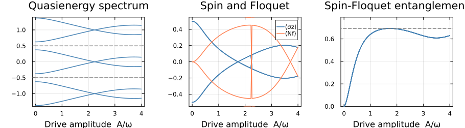

Floquet Systems: Defining Custom Algebras and Matrix Representations
This tutorial shows how to define a custom noncommutative operator algebra and matrix representations, which works together with the other symbolic operators and spaces in FermionicHilbertSpaces.jl.
Background: Floquet theory
A quantum system with a time-periodic Hamiltonian $H(t) = H(t+T)$ can be reduced to a static eigenvalue problem by embedding it into a Floquet-Hilbert space $\mathcal{H}_\text{phys} \otimes \mathcal{H}_\text{floquet}$. The second factor carries the Fourier harmonics of the drive. On the Floquet space we have the operators:
- the Floquet ladder $F$ with $F|n\rangle = |n{+}1\rangle$ (absorption of one drive photon),
- the Floquet number $N$ with $N|n\rangle = n|n\rangle$.
For a periodically driven two-level system
\[H(t) = \tfrac{\varepsilon}{2}\,\sigma_z + A\cos(\omega t)\,\sigma_x\]
the Floquet Hamiltonian is
\[H_F = \tfrac{\varepsilon}{2}\,\sigma_z + \omega N + \tfrac{A}{2}\,\sigma_x(F + F^\dagger).\]
Its eigenvalues are the quasienergies of the driven system; because $\mathcal{H}_\text{floquet}$ is infinite-dimensional we truncate to $|n| \le n_\text{max}$.
Defining the custom Floquet algebra
Here's what you need to define a new algebra and matrix representations:
- Symbolic types — structs representing your operators
@ncdeclaration — registers types with the algebraic machinery@commutativedeclaration — declares commutativity with other algebrasmul_effect— the multiplication / commutation rulesapply_local_operators— how operators act on basis statessymbolic_group— links operators to their Hilbert space
Let's load the package and import some things we need to overload or use
using FermionicHilbertSpaces
import FermionicHilbertSpaces.NonCommutativeProducts:
@nc, Swap, NCMul, AddTerms, @commutative, mul_effectStep 1 — Symbolic types
FloquetBasis represents a Floquet degree of freedom (having an id allows multiple Floquet modes). FloquetLadder represents $F^k$ and FloquetNumber represents $N^p$.
struct FloquetBasis
id::Int
end
struct FloquetLadder
shift::Int # +1 → F (raising), −1 → F† (lowering), k → F^k
basis::FloquetBasis
end
struct FloquetNumber
power::Int # exponent p in N^p
basis::FloquetBasis
end
FloquetLadder(b::FloquetBasis) = FloquetLadder(1, b)
Base.adjoint(F::FloquetLadder) = FloquetLadder(-F.shift, F.basis)
Base.adjoint(N::FloquetNumber) = N # N is Hermitian
Base.show(io::IO, F::FloquetLadder) = print(io, "F^", F.shift)
Base.show(io::IO, N::FloquetNumber) = print(io, "N^", N.power)
const Floquets = Union{FloquetLadder,FloquetNumber}Union{Main.FloquetLadder, Main.FloquetNumber}Step 2 — @nc declaration
Registering types with @nc enables symbolic algebra operations (+, *) on these types and marks their multiplication as noncommutative.
@nc FloquetLadder FloquetNumberStep 3 — @commutative declarations
If we want Floquet operators to commute with the spin operators defined in this package, we write
@commutative Floquets FermionicHilbertSpaces.SpinSymStep 4 — Multiplication rules via mul_effect
mul_effect(a, b) is called when two adjacent factors a·b appear in a symbolic product and determines how the pair should be rewritten:
nothing→ already in canonical order; keep as-is (you need this to avoid an infinite loop)Swap(c)→ reorder asc·b·a(exchange with coefficientc)AddTerms((Swap(c), r, ...))→ reorder and add:a·b = c·b·a + r + ...
We will sort Floquet operators from different modes by their 'id', and for operators of the same mode we will put number operators before ladder operators.
function mul_effect(a::Floquets, b::Floquets)
a.basis.id > b.basis.id && return Swap(1) # different subsystem: sort by id
a.basis.id < b.basis.id && return nothing # already in order
return floquet_mul(a, b) # same subsystem: apply algebra
endmul_effect (generic function with 17 methods)$F^j \cdot F^k = F^{j+k}$. Special case $j+k=0$: $F \cdot F^\dagger = \mathbf{1}$.
function floquet_mul(a::FloquetLadder, b::FloquetLadder)
total_shift = a.shift + b.shift
total_shift == 0 && return 1
return FloquetLadder(total_shift, a.basis)
endfloquet_mul (generic function with 1 method)$N^p \cdot N^q = N^{p+q}$. Special case $p=q=0$: $N^0 = \mathbf{1}$.
function floquet_mul(a::FloquetNumber, b::FloquetNumber)
a.power == b.power == 0 && return 1
return FloquetNumber(a.power + b.power, a.basis)
endfloquet_mul (generic function with 2 methods)$F^k \cdot N = N \cdot F^k - k\,F^k$, from $[N, F^k] = k\,F^k$ rearranged as $F^k N = N F^k - k F^k$.
function floquet_mul(a::FloquetLadder, b::FloquetNumber)
if b.power == 1
return AddTerms((Swap(1), -a.shift * a)) # Base case: F^k * N = N * F^k - k * F^k
else
N_remaining = FloquetNumber(b.power - 1, b.basis)
term1 = NCMul(1, [FloquetNumber(1, b.basis), a, N_remaining]) # N * F^k * N^(p-1)
term2 = NCMul(-a.shift, [a, N_remaining]) # -k * F^k * N^(p-1)
return AddTerms((term1, term2))
end
throw(ArgumentError("Should not reach here"))
endfloquet_mul (generic function with 3 methods)$N \cdot F^k$ is already in normal order ($N$ sorts before $F$).
floquet_mul(::FloquetNumber, ::FloquetLadder) = nothingfloquet_mul (generic function with 4 methods)Step 5 — apply_local_operators
This is the bridge between symbolic operators and matrix elements. Given an NCMul of Floquet factors and a single basis state, it returns the resulting state(s) and amplitude(s).
Let's make a type for the Floquet basis states
struct FloquetState <: FermionicHilbertSpaces.AbstractBasisState
mode::Int
endAnd define how Floquet operators act on these states.
$F^k$ shifts the Floquet index by $k$.
apply_local_operator(op::FloquetLadder, state::FloquetState, amp) = FloquetState(state.mode + op.shift), ampapply_local_operator (generic function with 1 method)$N^p$ multiplies the amplitude by $n^p$, where $n$ is the current mode index.
apply_local_operator(op::FloquetNumber, state::FloquetState, amp) = state, amp * state.mode^op.powerapply_local_operator (generic function with 2 methods)To hook it up to the matrix-representation machinery, we need to define `applylocaloperators(op::NCMul, state::FloquetState, space, precomp), where NCMul represents a product of Floquet operators. We just apply them sequentially here
import FermionicHilbertSpaces: apply_local_operators
function apply_local_operators(op::NCMul, state::FloquetState, space, precomp)
new_state, amp = foldr(
(factor, (s, a)) -> apply_local_operator(factor, s, a),
op.factors;
init=(state, op.coeff)
)
return (new_state,), (amp,)
endapply_local_operators (generic function with 9 methods)Step 6 — symbolic_group
The matrix-representation machinery uses symbolic_group to match operators to Hilbert spaces. We'll associate each Floquet operator with a FloquetBasis and use that object as the label for the Hilbert space
import FermionicHilbertSpaces: symbolic_group
symbolic_group(f::Floquets) = f.basis
symbolic_group(b::FloquetBasis) = bsymbolic_group (generic function with 15 methods)Building the Hilbert space
Now we can make a Hilbert space and get matrix representations of the Floquet operators.
floquet_basis = FloquetBasis(0)
F = FloquetLadder(floquet_basis) # raising operator F
Nf = FloquetNumber(1, floquet_basis) # photon number N
n_max = 5 # keep Floquet modes n = −n_max … n_max
Hfloq = FermionicHilbertSpaces.GenericHilbertSpace(floquet_basis, FloquetState.(-n_max:n_max))
matrix_representation(F, Hfloq; projection=true) # we need projection=true because we've truncated the Floquet space11×11 SparseArrays.SparseMatrixCSC{Float64, Int64} with 10 stored entries:
⋅ ⋅ ⋅ ⋅ ⋅ ⋅ ⋅ ⋅ ⋅ ⋅ ⋅
1.0 ⋅ ⋅ ⋅ ⋅ ⋅ ⋅ ⋅ ⋅ ⋅ ⋅
⋅ 1.0 ⋅ ⋅ ⋅ ⋅ ⋅ ⋅ ⋅ ⋅ ⋅
⋅ ⋅ 1.0 ⋅ ⋅ ⋅ ⋅ ⋅ ⋅ ⋅ ⋅
⋅ ⋅ ⋅ 1.0 ⋅ ⋅ ⋅ ⋅ ⋅ ⋅ ⋅
⋅ ⋅ ⋅ ⋅ 1.0 ⋅ ⋅ ⋅ ⋅ ⋅ ⋅
⋅ ⋅ ⋅ ⋅ ⋅ 1.0 ⋅ ⋅ ⋅ ⋅ ⋅
⋅ ⋅ ⋅ ⋅ ⋅ ⋅ 1.0 ⋅ ⋅ ⋅ ⋅
⋅ ⋅ ⋅ ⋅ ⋅ ⋅ ⋅ 1.0 ⋅ ⋅ ⋅
⋅ ⋅ ⋅ ⋅ ⋅ ⋅ ⋅ ⋅ 1.0 ⋅ ⋅
⋅ ⋅ ⋅ ⋅ ⋅ ⋅ ⋅ ⋅ ⋅ 1.0 ⋅ Now Floquet operators will work together algebraically with the spin operators, and we can get matrix represnentations of such mixed operators. Let's do some physics.
Driven two level system.
We'll take a spin 1/2 as our physical system and couple it to the Floquet space to model a driven two-level system. The full Hilbert space is a product of the spin and Floquet spaces, and the Hamiltonian is a symbolic expression mixing spin and Floquet operators. When making the full space, we use the SectorConstraint to organize the basis states in Floquet sectors, which will be convenient later.
@spin σ
Hspin = hilbert_space(σ, 1 // 2)
floquet_sectors = FermionicHilbertSpaces.SectorConstraint([Hfloq], [s -> s.mode], only)
H = tensor_product((Hspin, Hfloq); constraint=floquet_sectors)22-dimensional SectorHilbertSpace
Parent: ProductSpace(22-dim, 2 factors)
Sectors: 11 total [-5 (2-dim), ..., 5 (2-dim)]Floquet operators can be used together with spin operators to build the Floquet Hamiltonian (since we used @commutative to declare that they commute):
ε = 1.5 # level splitting
ω = 1.0 # drive frequency
floquet_ham(A) = ε / 2 * σ[:z] + ω * Nf + A / 2 * σ[:x] * F + A / 2 * σ[:x] * F'
floquet_ham(2)Sum with 6 terms:
0.5*F^1*σ[:-]+0.5*F^-1*σ[:+]+0.5*F^1*σ[:+] + ...Quasienergy spectrum vs drive amplitude
We sweep the drive amplitude A and collect quasienergies, spin polarisation $\langle\sigma_z\rangle$, Floquet number expectation value and entanglement between the spin and Floquet spaces.
using LinearAlgebra
A_values = range(0, 4 * ω, length=100)
n_states = dim(H)
spectrum = zeros(length(A_values), n_states)
spin_pol = zeros(length(A_values), n_states)
entanglement = zeros(length(A_values), n_states)
floquet_num = zeros(length(A_values), n_states)
σz_mat = matrix_representation(σ[:z], H)
Nf_mat = matrix_representation(Nf, H)
for (i, A) in enumerate(A_values)
mat = Matrix(matrix_representation(floquet_ham(A), H; projection=true))
vals, vecs = eigen(Hermitian(mat))
spectrum[i, :] = vals
for j in 1:n_states
v = vecs[:, j]
spin_pol[i, j] = real(v' * σz_mat * v)
rho = partial_trace(v * v', H => Hspin) # trace out Floquet space
entanglement[i, j] = -sum(λ -> λ * log(abs(λ) + eps(λ)), eigvals(Hermitian(rho)))
floquet_num[i, j] = real(v' * Nf_mat * v)
end
endPlots
Each line traces one Floquet eigenstate as the drive amplitude grows. The grey dashed lines mark the Brillouin zone boundaries at $\pm\tfrac{\omega}{2}$. We plot the central three zones. We plot the quasienergies, <σz> and entanglement between spin and Floquet spaces as a function of drive amplitude.
using Plots
floquet_zone_inds = reduce(vcat, [indices(n, H) for n in -1:1]) # Here we exploit the block structure of the hilbert space to get the zone indices of zones with floquet numbers -1 to 1.
n = length(floquet_zone_inds)
p1 = plot(xlabel="Drive amplitude A/ω", title="Quasienergy spectrum",
legend=false, frame=:box, size=(500, 360), ylims=(-1.4, 1.4))
plot!(p1, A_values ./ ω, spectrum[:, floquet_zone_inds]; lw=1.5, color=:steelblue)
hline!(p1, [0.5, -0.5]; color=:gray, lw=1.5, ls=:dash)
p2 = plot(xlabel="Drive amplitude A/ω", title="Spin and Floquet",
legend=true, frame=:box, size=(500, 360), ylims=0.5 .* (-1.1, 1.1),)
plot!(p2, A_values ./ ω, spin_pol[:, floquet_zone_inds]; lw=1.5, color=:steelblue, label=["⟨σz⟩" fill("", n - 1)...]
)
plot!(p2, A_values ./ ω, floquet_num[:, floquet_zone_inds]; lw=1.5, color=:coral, label=["⟨Nf⟩" fill("", n - 1)...]
)
p3 = plot(xlabel="Drive amplitude A/ω", title="Spin-Floquet entanglement",
legend=false, frame=:box, size=(500, 360), ylims=(0, log(2) + 0.1))
plot!(p3, A_values ./ ω, entanglement[:, floquet_zone_inds]; lw=1.5, color=:steelblue)
hline!(p3, [log(2)]; color=:gray, lw=1.5, ls=:dash)
plot(p1, p2, p3; layout=(1, 3), size=0.7 .* (1300, 360), margins=4Plots.mm)
This page was generated using Literate.jl.